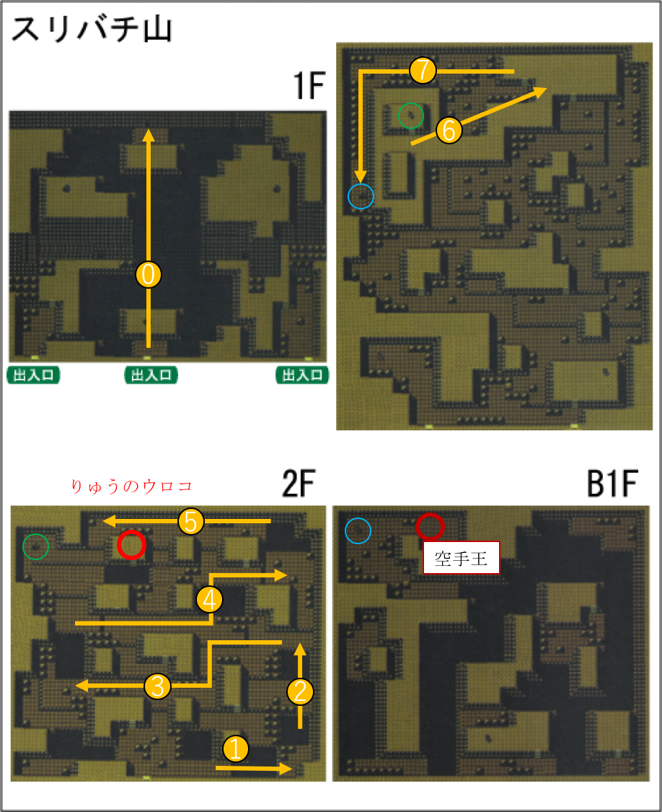

タスク一覧

チャート
【育成・進化ポケモン】
チコリータ→ベイリーフ(16)→メガニウム(32)
ヒノアラシ→マグマラシ(14)→バクフーン(36)
ワニノコ→アリゲイツ(18)→オーダイル(30)
レディバ→レディアン(18)
ズバット→ゴルバット(22)→クロバット(なつき)
チョンチー→ランターン(27)
トゲピー→トゲチック(なつき)
ネイティ→ネイティオ(25)
モココ→デンリュウ(30)
クサイハナ→キレイハナ(たいようのいし)
マリル→マリルリ(18)
ニョロゾ→ニョロトノ(おうじゃのしるし通信交換)
ポポッコ→ワタッコ(27)
ヒマナッツ→キマワリ(たいようのいし)
イーブイ→エーフィ(なつき朝昼)
イーブイ→ブラッキー(なつき夜)
クヌギダマ→フォレトス(31)
イワーク→ハガネール(メタルコート通信交換)
ブルー→グランブル(23)
ストライク→ハッサム(メタルコート通信交換)
マグマッグ→マグカルゴ(38)
ウリムー→イノムー(31)
テッポウオ→オクタン(25)
デルビル→ヘルガー(24)
シードラ→キングドラ(りゅうのウロコ通信交換)
ポリゴン→ポリゴン2(アップグレード通信交換)
バルキー→カポエラー(20.こうげき=ぼうぎょ)
ラッキー→ハピナス(なつき)
ヨーギラス→サナギラス(30)→バンギラス(55)
ヒノアラシ→マグマラシ(14)→バクフーン(36)
ワニノコ→アリゲイツ(18)→オーダイル(30)
レディバ→レディアン(18)
ズバット→ゴルバット(22)→クロバット(なつき)
チョンチー→ランターン(27)
トゲピー→トゲチック(なつき)
ネイティ→ネイティオ(25)
モココ→デンリュウ(30)
クサイハナ→キレイハナ(たいようのいし)
マリル→マリルリ(18)
ニョロゾ→ニョロトノ(おうじゃのしるし通信交換)
ポポッコ→ワタッコ(27)
ヒマナッツ→キマワリ(たいようのいし)
イーブイ→エーフィ(なつき朝昼)
イーブイ→ブラッキー(なつき夜)
クヌギダマ→フォレトス(31)
イワーク→ハガネール(メタルコート通信交換)
ブルー→グランブル(23)
ストライク→ハッサム(メタルコート通信交換)
マグマッグ→マグカルゴ(38)
ウリムー→イノムー(31)
テッポウオ→オクタン(25)
デルビル→ヘルガー(24)
シードラ→キングドラ(りゅうのウロコ通信交換)
ポリゴン→ポリゴン2(アップグレード通信交換)
バルキー→カポエラー(20.こうげき=ぼうぎょ)
ラッキー→ハピナス(なつき)
ヨーギラス→サナギラス(30)→バンギラス(55)
【時間限定等・最優先シリーズ】
◆[重要][メイン][昼]14番道路(セキチクシティ右)
・25レベを持っているときしかできない。
・25レベ先頭にしてスプレーまいて「ポポッコ26」「ラッキー」捕獲
・捕獲要員いないときついかもしれないので「デンリュウ」か「ルージュラ」必須
◆[重要][サブ][昼]しぜんこうえん
・ヒマナッツ捕獲(昼限定。10時〜18時。)
◆[重要][メイン][朝昼]ハナダジム
・[すごいつりざお]「サニーゴ」捕獲
◆[重要]しぜんこうえん(むしとりたいかい)
☆必ず優勝しなければならない。
☆その上、計2回優勝が必要(おそらくメインサブ1回ずつ。場合によってはサブ2回)。
☆一度はストライクを捕獲した上で優勝しなければならない(ストライクは虫取り大会中しか出現しない)
[事前準備]
・手持ちの先頭を捕獲要員(デンリュウorルージュラorワタッコorニョロゾなど、電磁波か催眠技が使えるやつ)
・ゲートの係員に話しかける前にレポート書いておく
[大会テクニック]
・開始直後、池の西側に青髪のトレーナーがいたらリセットして再挑戦しよう
・捕獲するのは「ストライク(14レベ)」が最優先。
・次点で「ストライク(13レベ)」「カイロス(14レベ)」「バタフリー(15レベ)」「スピアー(15レベ)」
＊とりあえず良さそうなのを捕獲できたらすぐゲートの係員と話して強制終了させ、優勝できなかったらリセット
・25レベを持っているときしかできない。
・25レベ先頭にしてスプレーまいて「ポポッコ26」「ラッキー」捕獲
・捕獲要員いないときついかもしれないので「デンリュウ」か「ルージュラ」必須
◆[重要][サブ][昼]しぜんこうえん
・ヒマナッツ捕獲(昼限定。10時〜18時。)
◆[重要][メイン][朝昼]ハナダジム
・[すごいつりざお]「サニーゴ」捕獲
◆[重要]しぜんこうえん(むしとりたいかい)
☆必ず優勝しなければならない。
☆その上、計2回優勝が必要(おそらくメインサブ1回ずつ。場合によってはサブ2回)。
☆一度はストライクを捕獲した上で優勝しなければならない(ストライクは虫取り大会中しか出現しない)
[事前準備]
・手持ちの先頭を捕獲要員(デンリュウorルージュラorワタッコorニョロゾなど、電磁波か催眠技が使えるやつ)
・ゲートの係員に話しかける前にレポート書いておく
[大会テクニック]
・開始直後、池の西側に青髪のトレーナーがいたらリセットして再挑戦しよう
・捕獲するのは「ストライク(14レベ)」が最優先。
・次点で「ストライク(13レベ)」「カイロス(14レベ)」「バタフリー(15レベ)」「スピアー(15レベ)」
＊とりあえず良さそうなのを捕獲できたらすぐゲートの係員と話して強制終了させ、優勝できなかったらリセット
【すぐ終わるシリーズ】
◆[メイン][サブ]キキョウシティ
・波乗りした先で「ふしぎなアメ」回収
◆[メイン][サブ]34番道路(コガネシティ下)
・波乗りした先で「ふしぎなアメ」回収(図を参考に)

◆[メインorサブ]37番道路(エンジュシティ下)
[メインorサブ]オドシシ
・捕獲難易度がやや高い。
◆[メインorサブ]38~39番道路(タンバシティ上)
・ミルタンク捕獲(5％)
◆[メインorサブ]アルフのいせき(キキョウシティ左)
・適当にパズル一個解いて、アンノーン捕獲
◆[サブ]29番道路(ワカバタウン左)
・エイパム、ヘラクロス捕獲(ずつき)
◆[メイン]ヤマブキシティ
・シルフカンパニーでアップグレードもらう
◆[サブ]つながりのどうくつ(キキョウシティ下)・波乗りした先で「ふしぎなアメ」回収
◆[メイン][サブ]34番道路(コガネシティ下)
・波乗りした先で「ふしぎなアメ」回収(図を参考に)
◆[メインorサブ]37番道路(エンジュシティ下)
[メインorサブ]オドシシ
・捕獲難易度がやや高い。
◆[メインorサブ]38~39番道路(タンバシティ上)
・ミルタンク捕獲(5％)
◆[メインorサブ]アルフのいせき(キキョウシティ左)
・適当にパズル一個解いて、アンノーン捕獲
◆[サブ]29番道路(ワカバタウン左)
・エイパム、ヘラクロス捕獲(ずつき)
◆[メイン]ヤマブキシティ
・シルフカンパニーでアップグレードもらう
◇23or24レベのポケモンを連れて行くと良い。
・どうくつ入って上に進み、ハシゴ降りて波乗りした先の出口(上側)へ。アルフの遺跡に着く。
・つながりのどうくつ水上で「ウパー」捕獲。
【アルフの遺跡】
・「ネイティ」「ドーブル」捕獲。「ネイティ」は23or24先頭にしてスプレー。
◆[メイン][サブ]ヒワダタウン(ヤドンの井戸)
[サブ推奨]ヤドンの井戸最奧で「おうじゃのしるし」回収、ヤドンも捕獲
・おうじゃのしるし自体は2個必要。
◆[メイン][サブ]コガネシティ(育て屋)
[メイン]イーブイ回収
[サブ]下の道路でメタモン捕獲。出現したらオタチに入れ替えてから捕獲すると良い。
・ブーバー、エレブー、ルージュラ、ピッピ、ピカチュウ、プリン、イーブイ、ラッキー、ズバットのタマゴをつくる
☆イーブイのタマゴは片方サブ(2周目)に送る。
◆[メイン]41番水道(タンバシティ右)
[メイン]「マンタイン」
・捕獲難易度が非常に高い。状態異常にできるポケモンを連れて行くこと
◆[メイン][サブ]45番道路(フスベシティ下)
[メイン]「グライガー」
[サブ]「ヒメグマ」「エアームド」
[メインorサブ]「ソーナンス(つながりのどうくつ内部)」
・エアームドは捕獲難易度が非常に高い。状態異常にできるポケモンを連れて行くこと
◆[メインorサブ]うずまきじま(タンバシティ右の水道)
・「ルギア」「シードラ」捕獲
・「シードラ」はB4F(ルギアいる部屋)波乗り10%.
・「ルギア」用に状態異常にできるポケモンを連れて行くこと
・入り口は右上の島。道順は図を参考に。
◆[サブ2周目]スリバチやま
・たきのぼり、フラッシュ必須
・手持ちを必ず1匹あけておくこと
・真ん中の入り口から入り、滝登りをして奧に進む。
・「りゅうのウロコ」と「バルキー」回収。「バルキー」はB1Fの空手王を倒すともらえる。

【以下メインのみ】
◆[メイン][夜]2番道路(トキワシティ上)
・6レベスプレーで「アリアドス」「ヨルノズク」捕獲
・「ホーホー」「イトマル(こいつは3レベ)」「ピカチュウ」捕獲(4レベスプレーで少し出やすい)
◆[メイン]3番道路(ニビ〜おつきみやまの間)
・プリン捕獲(10％)
◆[メイン]おつきみやま
＊ライバル戦あるから注意
・ピッピ捕獲(7~8スプレーで少し出やすい)
◆[メイン][夜]5番道路(ハナダシティ下)
・クサイハナ捕獲
◆[メイン]13番道路(セキチクシティ下)
・釣りオヤジの家で「すごいつりざお」もらう
◆[メイン]ワカバタウン
・[すごいつりざお]チョンチー、ランターン(10%)
◆[メイン]32番道路
・[すごいつりざお]ハリーセン
◆[メイン]スズの塔(エンジュシティ)
・「ホウオウ」捕獲
・「ふしぎなアメ」回収
・「ホウオウ」用に状態異常にできるポケモンを連れて行くこと
◆[メイン]タマムシシティ
・20万円分コイン買ってポリゴンと交換する
◆[メイン][夜]7番道路(タマムシシティ右)
・「ヤミカラス」「デルビル」捕獲
◆[メイン][夜]シロガネやま
・「ムウマ(どうくつの中)」「ヌオー(どうくつの中)」「ニューラ(外の草むら)」捕獲
◆[メイン]シロガネやま(ラスト)
・レッドと戦う。フラッシュ必要。
＊レッド
ピカチュウLv81 エフェクトガード→プラスパワー2つ、スピーダー1つ使用→かいりき
フシギバナLv77 かいりき 2回
エーフィLv73 かいりき
カビゴンLv75 かいりき 2回
カメックスLv77 かいりき 2回
リザードンLv77 かいりき 2回